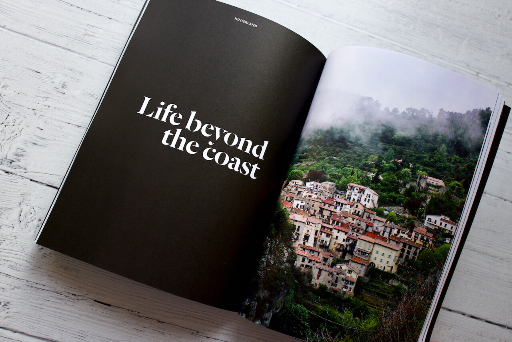
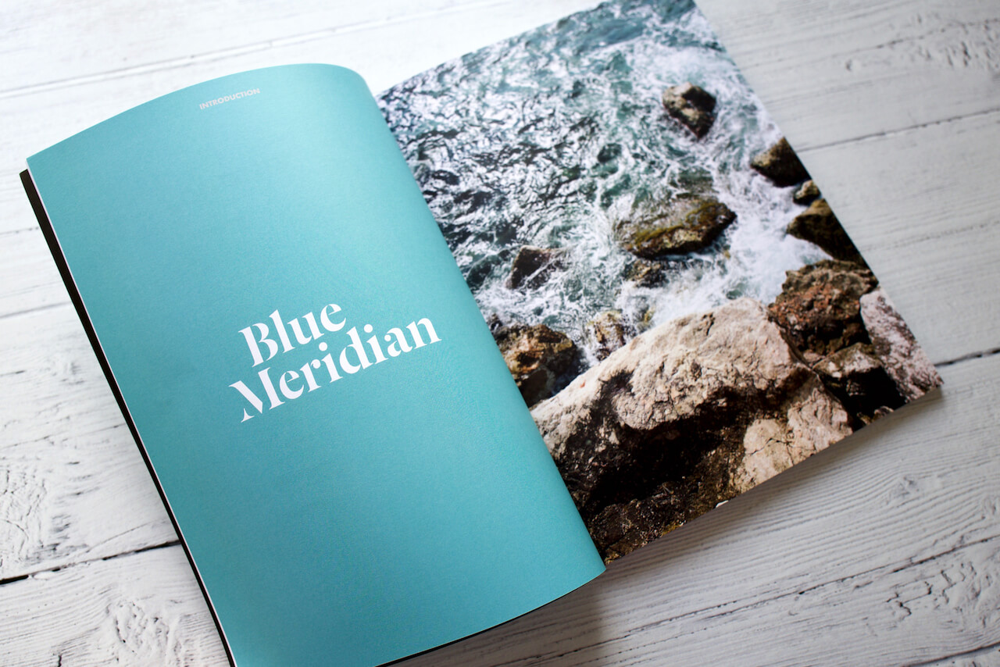
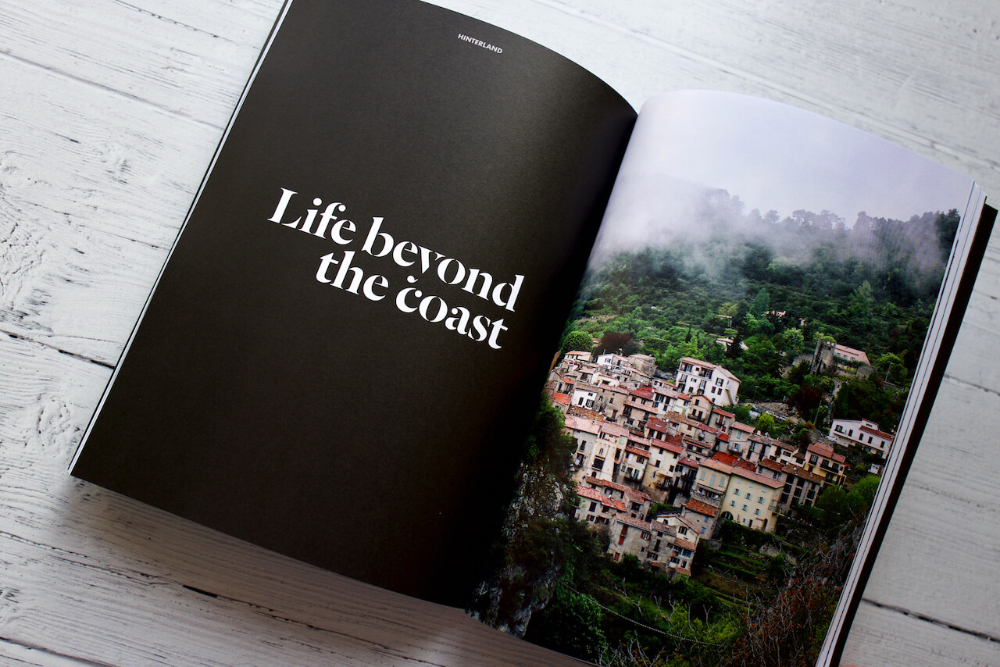
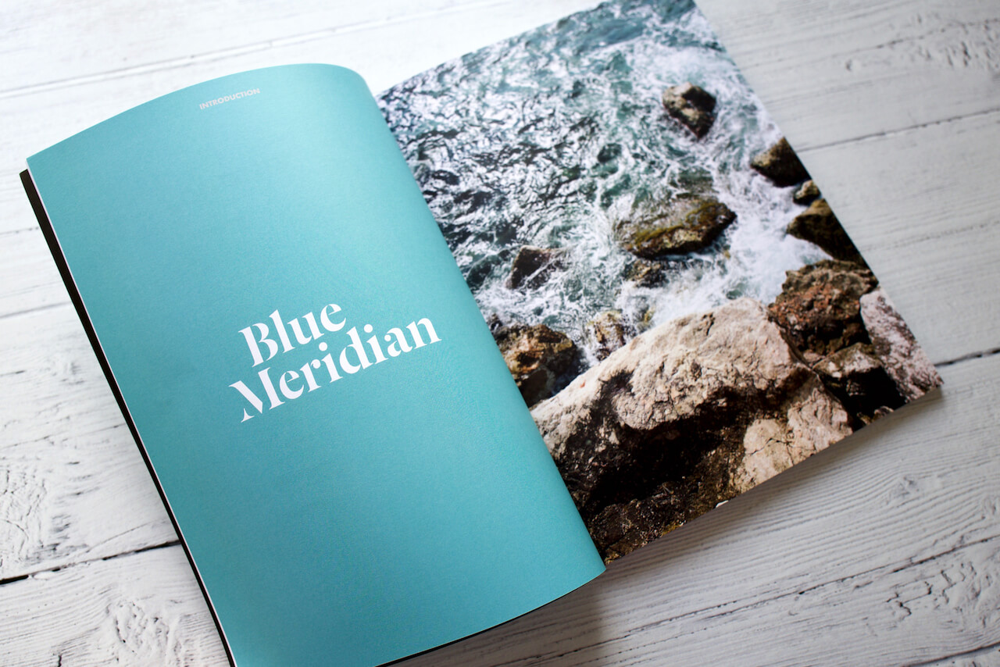

Andrew Revitt / Projects
Alpes-Maritimes - Issue Two
Design and editing
Issue two of the Super Alpine magazine.
From the coastline of the French Riviera to the hinterlands we explore everything from the region’s quiet roads, mountain summits and trails to the hedonistic pleasures of Monaco.
 



Specification
- 100 pages
- 195 × 260 mm (7.6 by 10.2 inches)
- 320g / 0.7lbs
- Perfect bound
- The cover is soft touch laminated FSC-approved 300gsm uncoated paper
- The inside is FSC-approved 120gsm uncoated paper
- Printed in and ships from the United Kingdom
More Information
The magazine on Super Alpine.